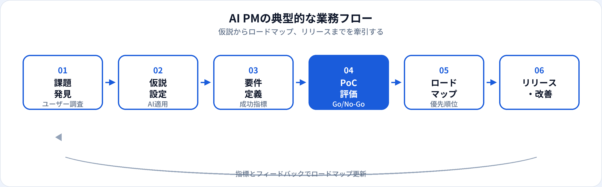

AIプロダクトマネージャー（AI PM）は、機械学習や生成AIをプロダクト機能として企画・定義し、ロードマップを牽引する職種です。AIエンジニアが実装を担うのに対し、AI PMは何を・なぜ・どの品質で届けるかを決め、PoCから本番リリースまで関係者をまとめます。本記事では、年収、スキル、関連職種との違いを2026年6月時点の市場感覚で整理します。
資格・学習との関係
AI PMに必要なのは、ツールの操作だけでなく、AIの限界・評価・倫理・ライフサイクル管理の理解です。G検定では企画から運用改善までの一連の流れが問われ、生成AIパスポートでは業務活用とリスク管理が整理できます。面接では「なぜAIで解くか」「成功指標は何か」を説明できるかが見られます。
よくある誤解は、「AI PM＝最新モデルを入れればプロダクトが伸びる」という考え方です。ユーザー課題とビジネスKPIに直結しないAI機能は、コストだけが増えることが多いです。
基礎概念を演習で確認する
G検定：一問一答 TF-185（企画・課題設定）、実践演習 G-423（AIライフサイクル）
生成AIパスポート：TF-0400（安全な活用） · 関連記事：生成AIエンジニアとは
AIプロダクトマネージャーとは
AI PMは、AI Product Managerとして、推薦・検索・異常検知・チャットボット・文書要約など、AI/MLを核にした機能のプロダクトオーナーに近い役割を担います。一般のPdMと同様にユーザー価値と優先順位を決めつつ、データの質・モデル精度・説明責任・法務リスクといったAI固有の論点を要件に織り込みます。
生成AIの普及以降、RAGやエージェント機能の企画・評価基準・ガードレール設計もAI PMの担当範囲に入ることが増えています。生成AIエンジニアやデータサイエンティストと密に協業し、技術的実現可能性とビジネスインパクトのバランスを取ります。
仕事内容
組織によって分担は異なりますが、AI PMに期待されやすい業務は次のとおりです。

課題発見・ユーザー調査
インタビュー、データ分析、サポートログからAIで解くべき課題を特定する。
仮説とAI適用の判断
ルールベースで足りるか、ML/LLMが必要か。コストとリスクのトレードオフを整理。
要件定義・成功指標
精度・再現率だけでなく、ビジネスKPI（CVR、解決率、工数削減）をセットで定義。
PoC設計・Go/No-Go
スコープを絞った検証。エンジニア・DSと評価データを用意し、本開発の判断材料にする。
ロードマップ・優先順位
複数AI機能の依存関係、データ整備の順序、リリース計画をステークホルダーと合意する。
リリース後の改善
本番メトリクスを追い、モデル更新・機能改善・ユーザー教育を継続する。
必要スキル
| 領域 | 具体例 | 重要度の目安 |
|---|---|---|
| プロダクトマネジメント | ユーザーストーリー、優先順位、ロードマップ、KPI設計 | 必須 |
| AIリテラシー | 教師あり/生成AIの違い、評価指標、ハルシネーション、バイアス | 必須 |
| ステークホルダー調整 | エンジニア・法務・営業・経営との合意形成 | 必須 |
| データ・分析 | SQLの読み方、A/Bテスト、ダッシュボードの解釈 | 実務で差がつく |
| 技術の基礎理解 | API、推論レイテンシ、コスト構造、MLOpsの概要 | 中級以上で重視 |
年収相場
当サイトの職種マスタでは、AIプロダクトマネージャーの年収目安を600万〜1,300万円としています（2026年6月時点の一般的な相場感）。AIエンジニアと同水準〜やや上振れする求人もあり、プロダクトの売上貢献が直接評価される企業ではインセンティブが上乗せされることもあります。
| 区分 | 年収の目安（日本・一般論） | 補足 |
|---|---|---|
| ジュニア | 600万〜800万円前後 | 既存PdMからAI機能を担当、またはアソシエイトPM |
| ミドル | 800万〜1,050万円前後 | AI機能のロードマップを一人称で牽引 |
| シニア | 1,050万〜1,300万円以上 | 複数プロダクト横断、組織のAI戦略に関与 |
キャリアパス
-
シニアAI PM / グループPM
複数チームのAI機能を統括。採用・メンタリングも担当。
-
ヘッドオブプロダクト / CPO
プロダクト戦略全体の責任者。AIはその中核の一つとして位置づけ。
-
エンジニアリングマネジメント寄り
実装経験を活かし、AIチームのEMへ。技術選定と組織づくりが中心。
-
起業・AIコンサル
プロダクト企画とAI実装の橋渡しを事業として提供。
関連職種との違い
| 職種 | 主な焦点 | AI PMとの違い |
|---|---|---|
| AIエンジニア | AI機能の実装 | コードとシステムが中心。AI PMは企画・優先順位・成功指標が中心。 |
| 生成AIエンジニア | LLM・RAG実装 | 技術実装寄り。AI PMはユースケース選定とプロダクト判断が中心。 |
| データサイエンティスト | 分析・モデル・示唆 | 分析とモデル構築が中心。AI PMはプロダクト全体の意思決定が中心。 |
| プロンプトエンジニア | プロンプト設計 | 指示設計に特化。AI PMは機能全体の企画から運用まで幅広い。 |
| プロダクトマネージャー（一般） | プロダクト企画全般 | AI固有の評価・リスク・データ要件の比重がAI PMで高い。 |
未経験からの道のり
-
AIリテラシーの基礎（1〜2か月）
G検定・生成AIパスポートで用語とリスクを整理。実際にAI機能を使い課題を体感する。
-
PdMスキル（継続）
ユーザーインタビュー、PRD作成、優先順位づけ。既職で小さな機能改善から経験を積む。
-
AI機能の企画書（1〜2か月）
架空または社内題材で「課題→仮説→指標→PoC計画」をドキュメント化する。
-
エンジニアとの協業経験
PoCプロジェクトにPMとして参加。評価結果をGo/No-Goに落とし込んだ実績があると強い。
メリット・デメリット
| メリット | デメリット |
|---|---|
| 技術とビジネスの両方に関われる | 成果が複数要因に依存し、評価が難しい |
| AIプロダクトの成長市場に乗りやすい | 法務・倫理・精度問題のステークホルダー調整が重い |
| エンジニア・DS以外からのキャリア入口もある | 最新技術のキャッチアップが継続的に必要 |
| プロダクト成功がキャリアに直結しやすい | PoC止まりにせず本番まで届けるプレッシャーがある |
よくある質問
AI PMとプロダクトマネージャーの違いは？
PdMがプロダクト全般を担うのに対し、AI PMはML/生成AI機能に特化した要件・評価・リスク管理の比重が高いです。
AI PMにプログラミングは必要？
必須ではありませんが、APIや評価指標の基礎理解があるとエンジニアとの協業がスムーズです。
AI PMの年収相場は？
おおむね600万〜1,300万円前後が目安となることが多いです（2026年6月時点の一般的な相場感）。
エンジニアからAI PMになれますか？
可能です。実装経験に加え、ユーザー課題・KPI・調整力を伸ばすのが典型的な移行パターンです。
生成AI時代にAI PMの仕事は変わった？
LLM機能の企画・評価・ガードレール・コスト管理が担当範囲に加わりました。基本の「課題→指標→検証」の流れは変わりません。